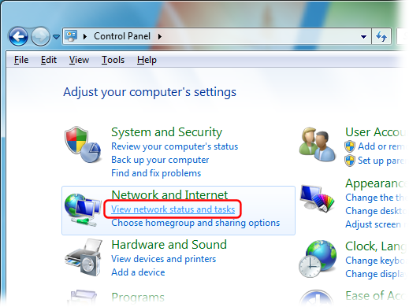
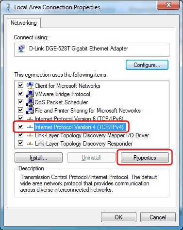

---
title: Configuring Windows to use local DNS server (Windows 7 / Windows 8 / Windows Server 2012)
category: 11
frontpage: false
comments: true
vgroup: 5
vname: Windows 7 / Windows 8 / Windows Server 2012
vsort: 101
refs: 26
created-utc: 2019-01-01
modified-utc: 2019-01-01
---
<div>In the Windows Control Panel, under &quot;Network and Internet&quot;, select &quot;View network status and tasks&quot;:<br />
<br />
<br />
<br />
Click &quot;Change adapter settings&quot;:<br />
<br />
<br />
<br />
Right-click your Internet connection's icon and select &quot;Properties&quot;:<br />
<br />
<br />
<br />
Select the &quot;Internet Protocol Version 4 (TCP/IPv4)&quot; item, and click the &quot;Properties&quot; button:<br />
<br />
<br />
&nbsp;
<p>Select &quot;Use the following DNS server addresses&quot;, and enter the IP address of the local DNS server (*) as the Preferred DNS server:<br />
<br />
<br />
<br />
Finally click the &quot;OK&quot; button in this and the previous&nbsp;dialogs to save your changes.</p>

<p>(*) The DNS server IP address must match an IP address that Simple DNS Plus is configured to listen on in the Options dialog / DNS / Inbound Requests section.<br />
If you are configuring the computer which Simple DNS Plus is running on, you can use 127.0.0.1 (the &quot;localhost&quot; address) - otherwise you must use an IP address which is accessible over the local area network.</p>

</div>